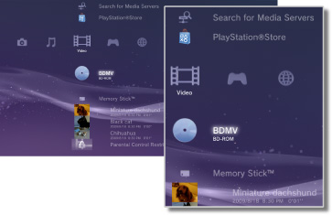

Video > Video category
Video category
The following icons are displayed under  (Video). The icons displayed vary depending on the conditions of use.
(Video). The icons displayed vary depending on the conditions of use.

 |
BD Data Utility | Administrative data used by the Blu-ray Disc™ (BD) is saved. |
|---|---|---|
 |
Search for Media Servers | Initiate a search for DLNA Media Servers that are connected on the same network. |
 |
Media Server | Connect to DLNA Media Servers and play the video files that are stored there. The icon displayed varies depending on the type of server. |
 |
Video Editor & Uploader | Edit video content that is saved in the system storage of the PS3™ system. |
 |
BD-ROM / BD-R / BD-RE | Play a Blu-ray Disc (BD). |
 |
DVD-ROM / DVD-R / DVD+R / DVD-RW / DVD+RW | Play a DVD or an AVCHD Disc. |
 |
Data Disc | Play video files saved on compatible, recordable disc media such as a CD-R or DVD-R. |
 |
Memory Stick™ | Play video files saved on Memory Stick™ media.* |
 |
SD Memory Card | Play video files saved on an SD Memory Card.* |
 |
CompactFlash® | Play video files saved on CompactFlash®.* |
 |
PSP™ (PlayStation®Portable) | Play video files saved on a PSP™ system's Memory Stick™ media. |
 |
PSP™ (PlayStation®Portable) | Play video files saved in the system storage of the PSP™go system. |
 |
Digital Camera | Play video files saved on a digital camera compatible with the PS3™ system. |
 |
WALKMAN® / ATRAC Audio Device(WALKMAN®) | Play video files saved on a WALKMAN®/ATRAC Audio Device (WALKMAN®). |
 |
ATRAC Audio Device | Play video files saved on an ATRAC Audio Device. |
 |
USB Device | Play video files saved on a USB mass storage device. |
 |
Digital Camera Movies | Play video files saved in the DCIM folder of the storage media. |
|
(folder) | This icon is displayed for folders that were created on the storage media using a PC. |
 |
(files saved in the system storage) | Play video files saved in the system storage of the PS3™ system. Thumbnail images are displayed. |
 |
(data downloaded to the system storage) | This icon is displayed for video files downloaded to the system storage. When started, the data is installed and the video file can be played. |
| * |
An appropriate USB adaptor (not included) is required to use storage media with some models of the PS3™ system. When used with a USB adaptor, storage media will be displayed as |
|---|
 (USB Device).
(USB Device).Hints
- The sale / rental of video content from PlayStation®Store on the PS3™ system has been discontinued.
- For details about DLNA, see
 (Settings) >
(Settings) >  (Network Settings) > [Media Server Connection] in this guide.
(Network Settings) > [Media Server Connection] in this guide. - For the system to output copyright-protected content from a Blu-ray Disc at a resolution of 1080p, you must use an HDMI cable to connect the system to a device that is compatible with the HDCP (High-bandwidth Digital Content Protection) standard.
- Thumbnail images may not be displayed for some types of copyright-protected video files.
- When playing a BD that contains content with parental control restrictions, playback will be limited according to the parental control level set on the PS3™ system. The BD parental control level can be adjusted under (Settings) > (Security Settings).
- When playing a DVD that contains content with parental control restrictions, a password may be required to play content. The password can be adjusted under (Settings) > (Security Settings).
- Content with parental control restrictions are displayed as
 . You can enable playback of such content by entering a 4-digit password. The password can be set or changed under (Settings) > (Security Settings).
. You can enable playback of such content by entering a 4-digit password. The password can be set or changed under (Settings) > (Security Settings). - Disc-locked BDs are displayed as
 . To play content on such discs, enter the password that was set by the disc developer.
. To play content on such discs, enter the password that was set by the disc developer. - In rare instances, discs and other media may not operate properly when played on the PS3™ system. This is primarily due to variations in the manufacturing process or encoding of the software.
- If a device that is not compatible with the HDCP (High-bandwidth Digital Content Protection) standard is connected to the system using an HDMI cable, video and/or audio cannot be output from the system.
Watching 3D content
A 3D compatible television that complies with the 3D standard and a high-speed HDMI cable are required to watch 3D content.
Hints
- Depending on the content, while Blu-ray 3D™ content is being played some elements, such as menus and subtitles, may be displayed differently in 3D on the PS3™ system than on other playback devices.
- Depending on the content, some BD-J features may not play in 3D or may not function properly on the PS3™ system.
- Dolby TrueHD audio is not supported during playback of Blu-ray 3D™ content. The Dolby Digital format is used instead.
Blu-ray Disc (BD) Local Storage
If an error message indicating that the Local Storage space is insufficient is displayed during BD playback, delete unnecessary files in the system storage to increase the amount of free space.
Local Storage is a data storage area that is defined in the BD-ROM Profile 1.1 / 2.0 standard. This data is stored in the system storage of the PS3™ system.